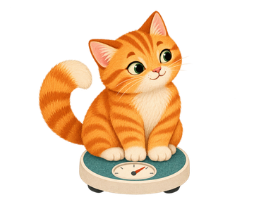

เดินเข้าห้องตรวจครั้งหน้าพร้อมเรื่องราวของเขาที่เรียบเรียงไว้แล้ว เก็บพาสปอร์ต เชื่อมเรื่องที่ดูแล และจดแผนที่สัตวแพทย์ให้มา รวมสิ่งที่สังเกต ประวัติงานดูแล และน้ำหนัก เป็นสรุปที่แชร์ได้ทั้งข้อความและ PDF
จ่ายครั้งเดียว ใช้ได้ตลอด ไม่มีสมัครสมาชิก ไม่มีโฆษณา ไม่มีบัญชีแต่ละบันทึกคือใกล้เคียงเดิม มีสิ่งเปลี่ยนไป หรือไม่ได้สังเกต วันที่ไม่ได้จดจะเว้นว่างไว้ ไม่ได้สังเกตไม่มีวันถูกแปลงเป็นปกติดี
แตะสิ่งที่สังเกต เพิ่มโน้ตหรือรูป จดงานดูแลว่าทำแล้วหรือข้ามไป หากไม่ได้จดก็ยังเป็นไม่มีบันทึก
รวมเรื่องที่กำลังดูแลและเรื่องที่เก็บแล้ว พร้อมพาสปอร์ต ประวัติงาน และกราฟน้ำหนัก แชร์สรุปรวมของสัตว์แต่ละตัวหรือเฉพาะเรื่อง เป็นข้อความหรือ PDF
เก็บรายละเอียดที่อยากเล่าให้สัตวแพทย์ฟังไว้ด้วยกัน ตั้งแต่สิ่งที่สังเกตในแต่ละวันจนถึงนัดครั้งหน้า

ไม่ได้ แอปช่วยจัดสิ่งที่คุณสังเกตให้เป็นระเบียบและซื่อสัตย์ เพื่อให้คุณเล่าให้หมอฟังได้ว่าเกิดอะไรขึ้นจริง ติดต่อสัตวแพทย์เมื่อมีข้อกังวลทางการแพทย์
ในเครื่องของคุณเท่านั้น ไม่มีบัญชีและไม่มีเซิร์ฟเวอร์ของเรา ส่งออกข้อมูลสำรองก่อนเปลี่ยนเครื่องหรือลบแอป
ไม่มี จ่ายครั้งเดียว ใช้ได้ตลอด ไม่มีซื้อในแอปและไม่มีโฆษณา
ไทย อังกฤษ และภาษาอื่น ๆ ที่มีในแอป
ได้ คุณเลือกเชื่อมแต่ละเรื่องกับพาสปอร์ต แล้วแชร์สรุปรวมของสัตว์ตัวนั้น แอปไม่เชื่อมสัตว์ที่ชื่อเหมือนกันเอง ใช้ชื่อกลุ่ม กรง หรือตู้และการค้นหาช่วยเลือกตัวที่ต้องการได้
การเตือนงานดูแลมีคิวล่วงหน้าเป็นช่วงจำกัด ตรวจวันที่สิ้นสุดคิวและเปิดแอปเป็นระยะเพื่อเติมคิว หากกู้คืนข้อมูล ต้องเปิดการเตือนใหม่อีกครั้ง
แบบครบรวมบันทึก รูปถ่าย และไฟล์แนบภายในขีดจำกัดการถ่ายโอน ถ้าไฟล์ใหญ่จะบันทึกเป็นหลายส่วน ควรเก็บทุกส่วนไว้ด้วยกัน แบบบางส่วนมีรายชื่อไฟล์ที่รวมมาไม่ได้ ส่วนไฟล์เฉพาะบันทึกไม่มีรูปหรือไฟล์แนบ ข้อมูลที่ส่งออกไม่ได้เข้ารหัส โปรดเก็บเป็นส่วนตัว